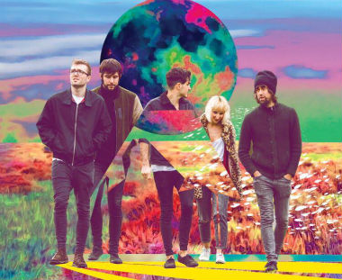

Premios Grammy 2018: Bruno Mars, el gran ganador
La Academia Nacional de Artes y Ciencias de la Grabación de los Estados Unidos celebró la 60.ª edición de los premios Grammy, con la conducción del humorista James Corden, en el Madison Square Garden de Nueva York. Bruno Mars se consagró como el gran ganador de la noche con seis estatuillas. Entre ellas, a la mejor grabación, la mejor canción y el mejor álbum. Otro de los grandes destacados fue Kendrick Lamar, que se llevó los premios al mejor video musical y a la mejor canción de rap por "Humble", una canción de su álbum DAMN, y dos premios por mejor actuación de rap, uno de ellos, con Rihanna.


Las canciones del momento
Como cada mes, renovamos nuestra playlist con las mejores canciones del momento en Spotify. Grises / Comida para insectos: Una de las canciones que claramente ha de ser uno de los hitazos de 2018 es esta contenida en ‘De peces y árboles’ de Grises. La Casa Azul / El momento: El segundo single de ‘La gran esfera’ es ‘El momento‘, una de las canciones más agridulces y setenteras de La Casa Azul. La Plata / Miedo: No decepciona el tiro con el que presentan debut largo los valencianos La Plata, autores de ‘Un atasco‘. Brigitte Laverne / Crush On You: Nuevo single de delicioso italo disco de la revelación que os presentamos hace unos años Brigitte Laverne. Hayley Kiyoko / Curious: “Revelación o revelación” son las canciones de la artista de mensaje queer Hayley Kiyoko, que podrían gustar a seguidores de Tove Lo o Dua Lipa. The Go! Team / Mayday: Entre nuestros Discos Recomendados de las últimas semanas, ‘Semicircle‘ de los carismáticos The Go! Team, del que destacamos el primer corte.